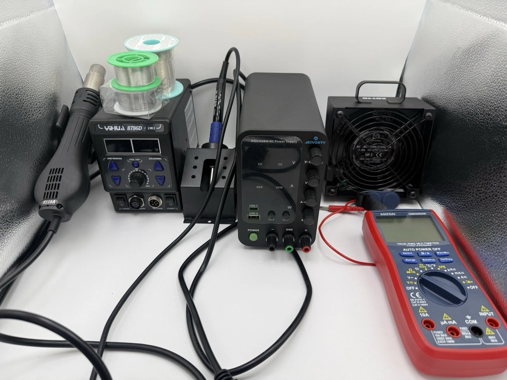

Electronics repair & resale
Bytronyx
Finding the fault.
Checking the repair.
I bought, repaired, and resold game consoles and controllers. My repair log records the symptoms, diagnostic checks, replacement parts, functional tests, and costs.
- Items in the log
- 248
- Repaired items
- 221
Multimeter / Soldering / Hot-air rework / DC supply

Repair example: Xbox 360 power fault
The console would not boot and reported error 0001. A known working power supply produced the same fault. I found a drain-to-source short on a MOSFET in the motherboard voltage regulator.
After replacing the MOSFET, I checked that the short was gone and measured 12.1 V on the 12 V input rail with the console running. Startup and gameplay checks did not reproduce the fault.
Read repair record EX-136